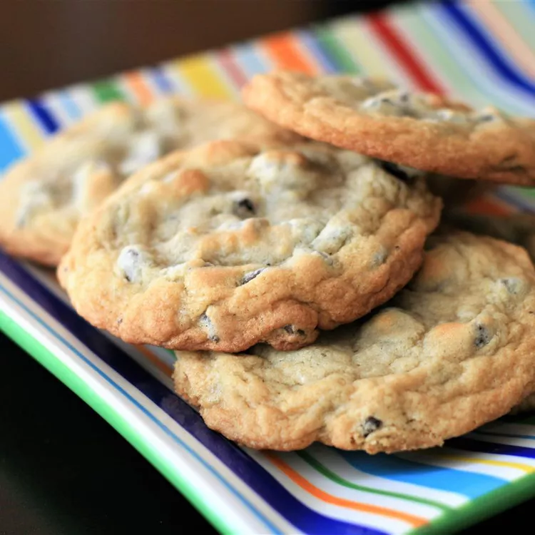

Chocolate Cookies
Return Home

Chocolate Chip Cookies, the one and only.
Now we know you're familiar with this cult classic, but maybe you need to be reminded of how delicious they really are.
We wont even give you a poem these are so popular.
- 1 cup butter, softened
- 1 cup white sugar
- 1 cup packed brown sugar
- 2 eggs
- 2 teaspoons vanilla extract
- 1 teaspoon baking soda
- 2 teaspoons hot water
- ½ teaspoon salt
- 3 cups all-purpose flour
- 2 cups semisweet chocolate chips
- 1 cup chopped walnuts
Directions
- Gather your ingredients, making sure your butter is softened, and your eggs are room temperature.
- Preheat the oven to 350 degrees F (175 degrees C).
- Beat butter, white sugar, and brown sugar with an electric mixer in a large bowl until smooth.
- Beat in eggs, one at a time, then stir in vanilla.
- Dissolve baking soda in hot water. Add to batter along with salt.
- Stir in flour, chocolate chips, and walnuts.
- Drop spoonfuls of dough 2 inches apart onto ungreased baking sheets.
- Bake in the preheated oven until edges are nicely browned, about 10 minutes.
- Cool on the baking sheets briefly before removing to a wire rack to cool completely.
- Store in an airtight container or serve immediately and enjoy!
Don't forget to double the recipe because we both know you're going to want more of these!
another great recipe by All Recipes!
All Recipes Source